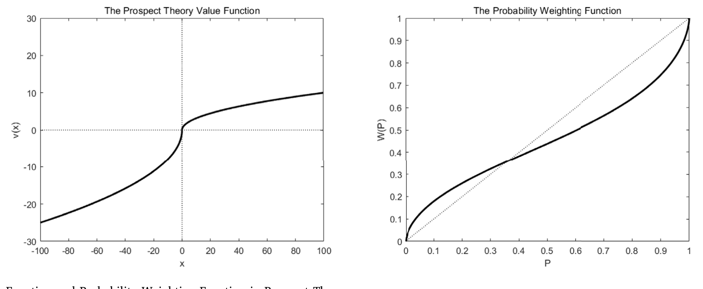
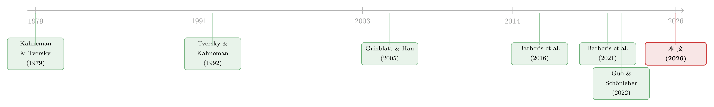

用真金白银投出来的前景理论：从基金资金流里「反推」投资者偏好
本文读的是 Han, Sui & Yang (2026, Journal of Financial Economics)：用美国主动管理型权益类共同基金的资金流，检验「前景理论 (prospect theory)」是否真的在现实市场里左右投资者的选择。结论相当硬——历史业绩前景理论价值 (TK) 越高的基金，未来吸引的资金流越大；更妙的是，作者用「显示偏好 (revealed preference)」的方法，把前景理论的参数直接从基金选择里反推出来，结果与几十年前实验室里量出来的数字惊人地吻合。
1 一个被「供在神龛上」的理论
前景理论大概是行为金融里最有名、却也最「悬空」的一套框架。
它由 Kahneman 与 Tversky 在 1979 年提出，后来 Tversky 与 Kahneman 在 1992 年给出累积形式，连带交出了一组沿用至今的参数：价值函数的曲率 α=0.88、损失厌恶 λ=2.25、收益区与损失区的概率加权 γ=0.61、δ=0.69。这组数字几乎成了行为资产定价的「物理常数」——无数论文拿它去解释动量、彩票偏好、处置效应、IPO 折价……
可问题在于：这组参数是从实验室赌局里估出来的。受试者面对的是「60% 概率赢 100 块」这样干净利落的人造彩票。而真实市场里的投资者，面对的是噪音、是手续费、是几十年的历史净值曲线。一个自然的、却长期没人敢正面回答的问题是：
把实验室里量出来的尺子，搬到真实的金融市场上，它还准吗？前景理论究竟是描述「人在赌桌前怎么想」，还是真能描述「人在拿真金白银做配置时怎么做」？
数据稀缺，是这个问题一直被绕开的主因。要回答它，你需要一个选择 (choice) 数据异常丰富、且每个选项都自带一条清晰「收益分布」的市场。作者敏锐地意识到：共同基金市场，恰好就是这样一个天造地设的实验场。
（关于实验室偏好如何映射到真实买卖，这条思路与《外推者与逆向者：一把在实验室里量出来的尺子，丈量真实世界的买卖》一脉相承。）
2 为什么是共同基金？
理由其实很朴素。
首先，基金投资者做选择时，手里能看到的最主要信息，就是基金过去的业绩——而且 Morningstar 这类平台普遍用一张图，把过去五年的月度收益画给你看。换句话说，「过去 60 个月的收益分布」几乎就是投资者脑子里对这只基金的「心理表征 (mental representation)」。
接着，一个自然的问题是：怎么把这条净值曲线翻译成「前景理论价值」？这正是 Barberis et al. (2016) 在股票上做过的事，作者把它原封不动地搬到了基金上。他们沿用前景理论的「两步走」——先「表征 (representation)」、再「估值 (valuation)」——给每只基金、每个时点算出一个数，命名为 TK（取自 Tversky 与 Kahneman 的首字母）。
TK 的直觉：它衡量的是「一个前景理论投资者，持有这只基金会有多大的心理效用」。TK 高，意味着这只基金的历史收益分布在前景理论的眼里很「诱人」——可能是右偏的、带点彩票味的、亏损不算太狠的。
于是核心假设呼之欲出，而且干脆得不像一篇行为金融论文：TK 越高的基金，未来吸引的资金流越大。
3 模型：怎么把一条净值曲线「炼」成一个 TK 值
这是全文的发动机，值得一步步拆开。
第一步：表征。 取基金最近 60 个月的收益，减去参考点（主基准用无风险利率 (risk-free rate)，遵循 Barberis & Huang, 2008），得到一组「相对盈亏」r，再把它们按从最负到最正排好序，每个赋以相等的概率 1/60：
$$ \Big(r_{-m},\tfrac{1}{60};\; r_{-m+1},\tfrac{1}{60};\;\dots;\; r_{-1},\tfrac{1}{60};\; r_{1},\tfrac{1}{60};\;\dots;\; r_{n},\tfrac{1}{60}\Big) $$
其中 r_{-m} 到 r_{-1} 是损失（从最负到最不负），r_1 到 r_n 是收益（从最小到最大）。这就是投资者脑中那条净值曲线的「数学化身」。
第二步：估值。 前景理论的两块基石登场。一是价值函数 (value function)：
$$ v(x)=\begin{cases} x^{\alpha} & \text{for } x\ge 0\\[2pt] -\lambda(-x)^{\alpha} & \text{for } x<0 \end{cases} $$
它在原点处有个「拐点 (kink)」：同样大小的盈和亏，亏带来的痛苦被放大 λ 倍——这就是损失厌恶。它在收益区凹、损失区凸——这是凹凸性 (concavity/convexity)，说的是人在赚钱时厌恶风险、亏钱时反而追逐风险。
二是概率加权函数 (probability weighting function)：
$$ w^{+}(P)=\frac{P^{\gamma}}{\big(P^{\gamma}+(1-P)^{\gamma}\big)^{1/\gamma}},\qquad w^{-}(P)=\frac{P^{\delta}}{\big(P^{\delta}+(1-P)^{\delta}\big)^{1/\delta}} $$
它的后果是：极端、罕见的事件被高估。这正是「彩票偏好」的数学根源——哪怕中奖概率只有万分之一，人也会在心里把它放大。
下面这张图把这两个函数画在了一起，是理解整个框架的钥匙：

Figure 1: Value Function and Probability Weighting Function in Prospect Theory
第三步：合成。 把价值函数与（经概率加权后的）决策权重相乘、对所有盈亏档位求和，就得到这只基金的 TK。这是全文最核心的一个方程：
主结果就用标准参数（即上面那组 α=0.88, λ=2.25, γ=0.61, δ=0.69）算出 TK，然后做面板回归，看它能不能预测未来的资金流。资金流本身按教科书定义：
$$ Flow_{i,t}=\frac{TNA_{i,t}-TNA_{i,t-1}(1+r_{i,t})}{TNA_{i,t-1}} $$
4 数据与主要结果
数据。 主源是 CRSP 的 Survivor-Bias-Free 美国共同基金数据库，聚焦主动管理型权益类基金，剔除 ETF/ETN、变额年金与指数基金。样本期 1981 年 1 月–2022 年 6 月，平均每月约 2,698 只基金纳入分析。份额类别按 Berk & Van Binsbergen (2015) 的方法汇总到基金层面，主变量在 5%/95% 分位处缩尾。
结果一：TK 强劲预测资金流。 高 TK 基金未来的资金流显著更高，且在控制各类业绩指标（alpha、Morningstar 评级、MRAR、收益的最大值与偏度等）后依然稳健。作者还专门处理了 Stambaugh (1999) 指出的「持续性回归变量」偏误，换了多种计量设定，结论不变。更难得的是，把前景理论拆成三块——损失厌恶、凹凸性、概率加权——每一块都独立、显著地对资金流有解释力。这一点正是本文与并行工作 Guo & Schönleber (2022) 的关键分歧：后者只找到损失厌恶起作用，没找到概率加权或凹凸性的证据。
结果二（真正关键的一步）：显示偏好反推参数。 前面都是「拿实验室的参数去算」。但作者更野心勃勃的一问是：到底哪一组参数，最能拟合投资者真实的基金选择？ 他们用一个离散选择模型 (discrete choice model) 把参数从资金流里直接估出来：
- 损失厌恶
λ = 1.824——落在传统共识的2.25（Tversky & Kahneman, 1992）与近期实验荟萃分析的1.31（Walasek et al., 2018）之间； - 概率加权参数：收益区
0.11、损失区0.23——比实验室里的更低，意味着基金投资者对小概率事件的高估比实验室受试者还要厉害； - 价值函数曲率
0.745——稳稳落在实验室研究的常见区间内。
一句话：从真实市场「投票」里反推出来的偏好，和几十年前赌桌前量出来的偏好对得上。这是本文最有分量的结论——它让前景理论从「悬在神龛上的常数」，变成了「能被田野数据验证的活体偏好」。
结果三：损失厌恶会随业绩漂移。 利用逐季度估计的损失厌恶参数，作者发现：先前投资业绩越好，损失厌恶越低。这正好印证了 Barberis et al. (2001) 的「赌场资金效应 (house money effect)」假设——刚赚过钱的人，对接下来的亏损没那么怕了。
5 反转：高 TK 基金，其实是「笨钱」
故事到这里如果只是「前景理论很好用」，未免太顺了。于是反转出现。
作者顺手追问：高 TK 基金吸来这么多钱，它们后续表现更好吗？答案是——不但不好，反而更差。TK 与未来基金业绩呈负相关。
为了把话说透，作者把资金流拆成两块：能被 TK 预测的「TK-驱动部分」，和 TK 解释不了的「非 TK-驱动部分」。结果泾渭分明：TK-驱动的资金流显著负向预测未来业绩，而非 TK-驱动的资金流正向预测。换句话说，市场里既有能挑出好基金的聪明钱，也有单纯追逐高 TK、最后被套的「笨钱 (dumb money)」。
这种非理性还有结构性的指纹：TK 对资金流的效应，在散户主导、经纪商代销的基金里更强（这些基金的投资者更不老练），在高投资者情绪时期（用 Baker & Wurgler, 2006 的情绪指数衡量）更强、在衰退期显著减弱。投资者老练程度与情绪的交互，都指向一种「有限理性 (bounded rationality)」。
（关于「投资者追着评级买基金、却未必买到更好业绩」，可对照本站《Mutual Fund》里 Morningstar 评级与资金流的讨论；关于「拆开资金流、看是谁在推动」的思路，亦可参见《异象收益究竟是谁推动的？》。）
6 文献脉络
把这篇论文放进时间轴里看，它的位置会更清楚。
源头是两篇奠基之作：Kahneman & Tversky (1979) 与 Tversky & Kahneman (1992)，前者立框架、后者给出沿用至今的参数。接着，一条线试图把前景理论搬到资产价格上：Grinblatt & Han (2005) 用它解释动量与处置效应，Barberis et al. (2016) 则提出了「用过去收益分布构造 TK」的经验框架——这正是本文方法论的直接母体，后续 Barberis et al. (2021) 又做了延伸。
但价格是均衡量，会被需求之外的因素污染；从价格反推偏好，未必干净。于是本文做了一个角度上的「换位」：不看价格，看选择。在并行工作里，Gu & Yoo (2021) 与 Guo & Schönleber (2022) 也注意到基金 TK 能预测资金流，但前者较浅、后者只支持损失厌恶。本文走得更远——三块特征逐一验证、用账户级数据在微观层面交叉确认、并首次用显示偏好把前景理论参数从基金选择里估了出来。

7 评论与延伸（Q&A + 研究方向）
(a) 几个可能的疑问
Q：TK 和「追业绩」「彩票偏好」到底有什么不同？会不会只是换了个名字？
不是。论文专门做了增量检验：
TK在控制 alpha、Morningstar 评级、MRAR、收益最大值/偏度、以及收益外推、显著性理论 (salience theory) 之后，依然显著为正。彩票偏好只对应概率加权那一块，而TK把损失厌恶、凹凸性、概率加权打包，三块各自都有独立解释力——这是它与「彩票」最大的区别。
Q：用过去 60 个月收益当「心理表征」，是不是太武断？
作者的辩护有现实依据：Morningstar 等平台普遍用五年期月度收益图展示业绩，所以「过去 60 个月」恰是投资者真实看到的信息。稳健性上，作者还换了参考点（零、市场收益、风格基准、预期基准），结论不变。
Q：反推出来的损失厌恶 λ=1.824 比经典的 2.25 低，是不是说明前景理论「在现实里没那么强」？
恰恰相反，这是个加分项。
1.824落在2.25（Tversky-Kahneman）与1.31（Walasek 等近期荟萃）之间，说明田野估计与实验室估计是同一量级、相互校准的。而概率加权参数比实验室更低，反而说明现实中对小概率的高估更严重。
Q：高 TK 基金后续业绩更差，会不会只是资金流的价格冲击造成的？
这正是作者用资金流分解回应的担忧：他们把流拆成
TK-驱动与非TK-驱动两部分，发现只有TK-驱动的那部分负向预测业绩。若仅是机械的价格冲击，两部分应同向，而事实是相反的——这支持「笨钱」解释而非纯流动性效应。
Q：选择 (choice) 比价格 (price) 更能识别偏好，这个说法成立吗？
论文的核心立场就在此。价格是均衡量，受需求之外因素影响；而选择直接反映个体偏好。作者还援引 Bossaerts et al. (2022)：在简单两期模型里，近视均衡与完全预见均衡的价格几乎一样，但选择差别很大——这说明只盯价格可能错失偏好信息。
Q：这是不是只是美国散户的故事，机构投资者也这样吗？
论文明确指出效应在散户主导、经纪商代销的基金里更强，且在高情绪期更强——这恰恰暗示它主要是不老练投资者的行为。机构是否也呈现前景理论模式，论文没有正面回答，这是个开放问题。
(b) 几个可能的研究问题与提案
1. 把 TK 搬到公司债基金 / 信用市场。
【经济故事】信用市场的收益分布天然左偏（小概率大亏损），与前景理论的损失厌恶、概率加权高度契合；高收益债基金的「彩票味」可能比股票基金更浓。【可行性】中。CRSP/Morningstar 有债券基金数据，论文也提到主结果对债券基金稳健；难点在于参考点设定（信用利差还是无风险利率）与久期、利率风险的剥离。
2. 外资持有人 vs. 本土投资者的前景理论差异。
【经济故事】若前景理论强度随「老练程度」变化，那么本土散户与跨境机构在面对同一只基金时，TK-资金流敏感度应当不同；这能把行为偏差与投资者身份直接挂钩。【可行性】中偏低。需要带投资者国籍/类型标签的份额级或账户级流数据，识别上要处理本土偏好 (home bias) 等混淆。
3. TK 与基金流动性、赎回压力的交互。
【经济故事】高 TK 基金吸来的是情绪化的「笨钱」，这类资金在情绪逆转时可能更快撤离，放大流动性错配 (liquidity mismatch) 与挤兑风险。【可行性】高。资金流的波动性、赎回门槛、持仓流动性都可观测，可直接检验「TK-驱动流是否更不稳定」。
4. 损失厌恶随业绩漂移的时变结构。 【经济故事】论文已发现先前业绩越好、损失厌恶越低（赌场资金效应）。能否进一步刻画这种漂移的动态——它在牛熊转换、危机前后如何演化，是否可用于预测资金流的拐点？【可行性】高。逐季度估计框架论文已建好，只需在时序维度上做更细的状态划分。
5. 显示偏好框架的外部检验：用账户级交易数据估参数。
【经济故事】论文用账户级数据验证了「个人更倾向持有/买入高 TK 基金」，但参数估计主要基于基金层面的聚合流。若能直接在账户级买卖决策上估前景理论参数，可检验聚合估计是否被异质性掩盖。【可行性】中。需要零售经纪商的完整持仓与交易明细，识别上要处理同一账户多笔决策的相关性。
8 参考文献
Barberis, N., Huang, M., Santos, T. (2001). Prospect theory and asset prices. Quarterly Journal of Economics 116(1), 1–53.
Barberis, N., Mukherjee, A., Wang, B. (2016). Prospect theory and stock returns: An empirical test. Review of Financial Studies 29(11), 3068–3107.
Baker, M., Wurgler, J. (2006). Investor sentiment and the cross-section of stock returns. Journal of Finance 61(4), 1645–1680.
Grinblatt, M., Han, B. (2005). Prospect theory, mental accounting, and momentum. Journal of Financial Economics 78(2), 311–339.
Gu, A., Yoo, H.I. (2021). Prospect theory and mutual fund flows. Economics Letters 201, 109776.
Guo, J., Schönleber, L. (2022). Investor behavior under prospect theory: Evidence from mutual funds. Working Paper.
Huang, J., Sialm, C., Zhang, H. (2011). Risk shifting and mutual fund performance. Review of Financial Studies 24(8), 2575–2616.
Kahneman, D., Tversky, A. (1979). Prospect theory: An analysis of decision under risk. Econometrica 47(2), 263–291.
Reuter, J., Zitzewitz, E. (2021). How much does size erode mutual fund performance? A regression discontinuity approach. Review of Finance 25(5), 1395–1432.
Stambaugh, R.F. (1999). Predictive regressions. Journal of Financial Economics 54(3), 375–421.
Tversky, A., Kahneman, D. (1992). Advances in prospect theory: Cumulative representation of uncertainty. Journal of Risk and Uncertainty 5, 297–323.
Walasek, L., Mullett, T.L., Stewart, N. (2018). A meta-analysis of loss aversion in risky contexts. Working Paper.
我的判断。 这篇论文的贡献不在于「又验证了一次前景理论」，而在于它把前景理论从一组「拿来即用的常数」，变成了可以被市场数据反过来估计、并与实验室相互校准的活体偏好——λ=1.824 这个数字本身就是论文最有说服力的「证据物」。识别上我最在意两点：一是 TK 与诸多业绩/行为变量同根（都由过去收益构造），增量解释力虽经多重控制，但「同源变量互相挤压」的隐忧很难完全消除；二是显示偏好估计依赖离散选择模型的设定（选择集、效用形式），参数对这些假设的敏感性值得更透明地展示。后续我最想看到的，是把这套框架推到信用/公司债基金与带投资者身份标签的账户级数据上——前者能检验前景理论在更左偏的收益分布里是否更有力，后者能直接回答「到底是谁在用前景理论投票」。